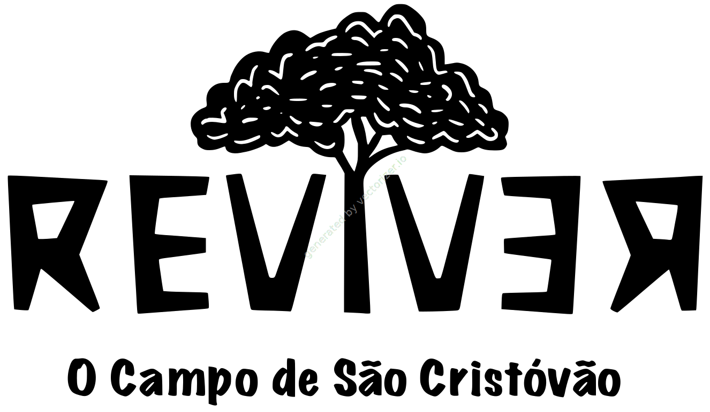
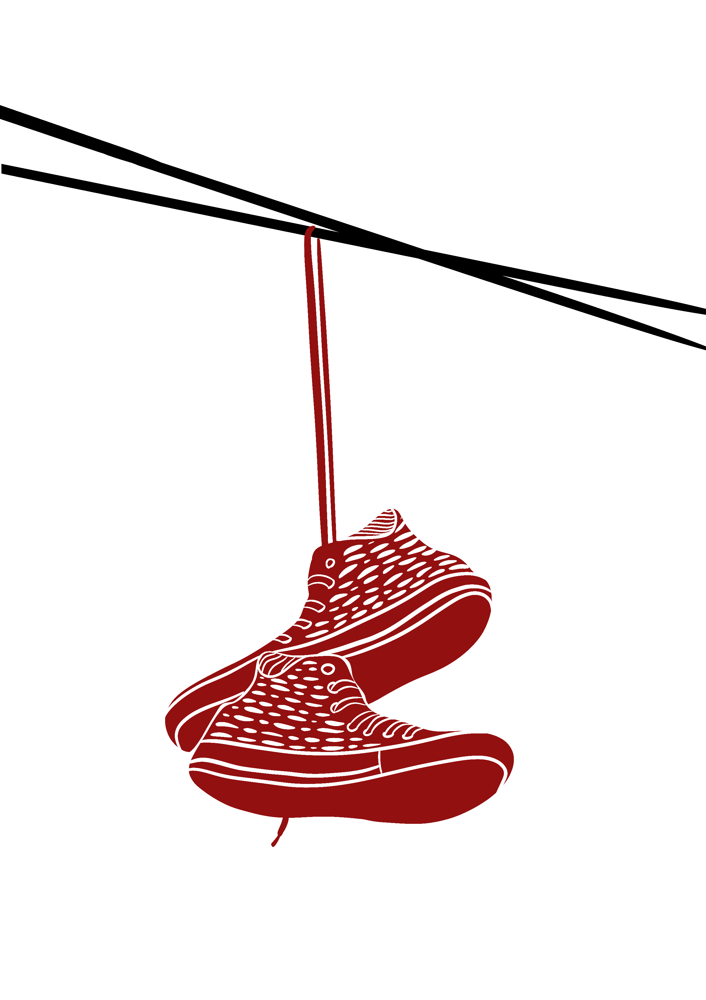
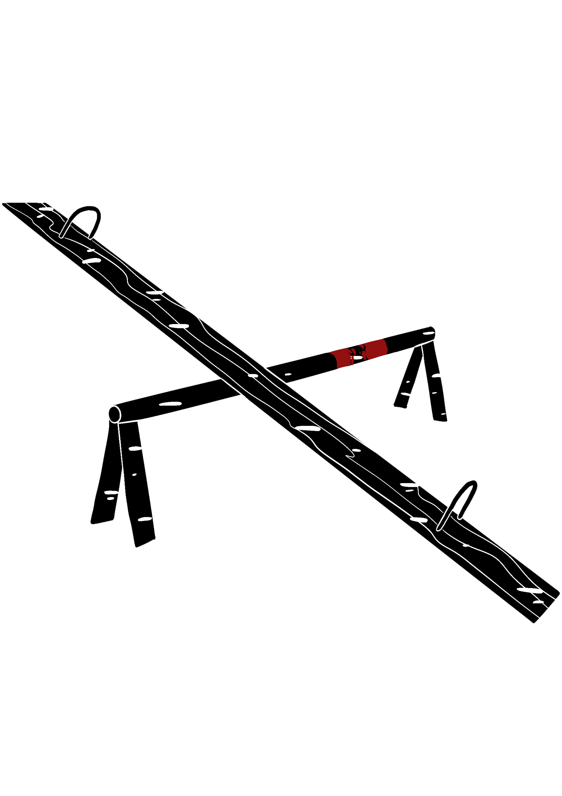
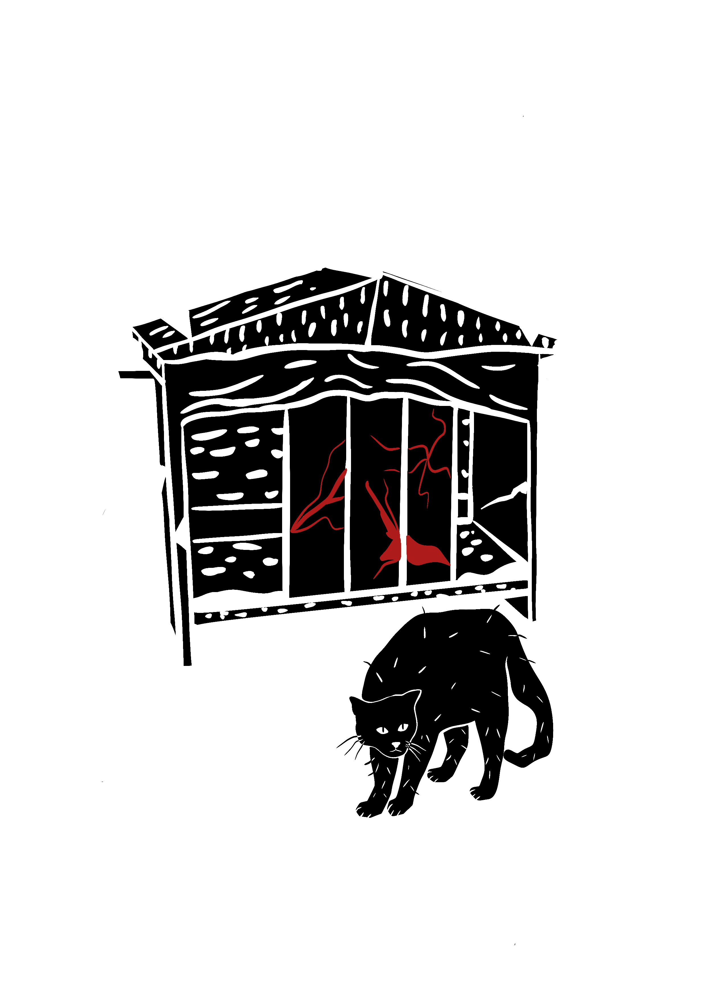
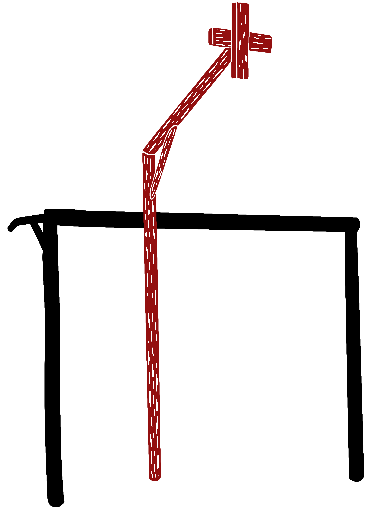

A responsabilidade social e
a preservação
ambiental significa um compromisso com a vida.

Velhos calçados nos cabos,
balançando ao vento em vão,
como marcas do abandono
que não cabem mais no chão.
A gangorra enferrujada,
que um dia foi diversão
hoje range no abandono,
esperando outra geração.

Cordéis

Até os gatos desse parque,
sem ter onde se abrigar,
sofrem no calor da espera,
torcendo ganhar uma casa pra morar.
E as histórias dos pilares,
encardidas pelo tempo,
viram só mais uma das milhares
de coisas esquecidas do campo.

Objetivo
Nosso objetivo consiste em retormar a vida
do Campo de São Cristóvão, para que a população
possa usufruir desse espaço público.
Para isso, criamos um sistema informativo para
destacar o abandono do Campo.
A seguir, você pode acessar o instagram
de São Cristóvão, que posta acontecimentos
e luta pela informação do bairro.
